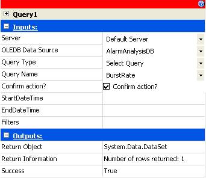
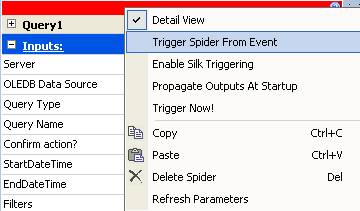
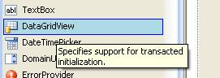
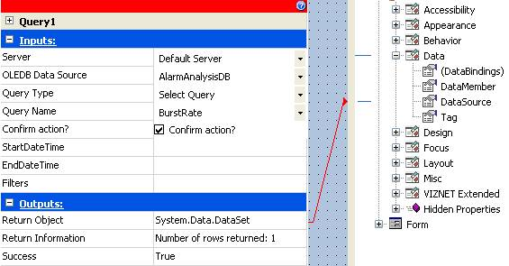
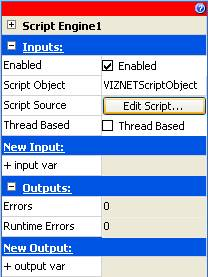
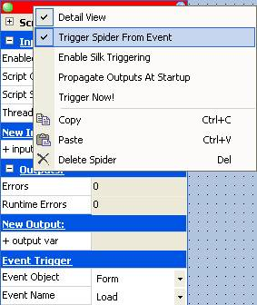

How to set spider inputs and trigger
spiders through script
Introduction
This document aims to describe how SmartUI users can
set the input parameter values of a spider and trigger the relevant spider
using script, either by using a Script Engine Spider or the Graphic Form
Script.
IMPORTANT: The screenshots and specified configuration settings relate to an OLD version of the SmartUI product and so your specific settings and screens may differ.
This method of setting and triggering spiders is
useful in the following scenarios:
To ensure that a spider in triggered only after all input parameter value(s) have been set.
When you have more than one spider that needs to be triggered and the relevant spiders must always be triggered in a specific order.
When the input parameter value(s) of the spider is so complex that it can only be calculated using script.
When the output data of a spider is needed in your script for further processing.
What you need to do before you can begin
this procedure
You need a thorough understanding and/or experience in the VB.Net or C# (Sharp) programming language.
You need to be familiar with using SmartUI i.e. creating projects, adding datasources etc.
For this example you also need an OLE DB compliant database.
Install the latest available version of SmartUI
Start your SmartUI Server and SmartUI Designer and log in to the
SmartUI Server.
Triggering a Query spider once its input
parameters are set
Adding the necessary components
Add a new project to the SmartUI Designer; call it TestPrj or anything you like.
Create a new Graphic Form for this project.
Add an OLE DB datasource for your database, in this example the name of our OLE DB datasource is AlarmAnalysisDB.
Create a query in the OLE DB datasource that’s requires
one or more Input Parameters. In this example we created a Select query,
with the name of BurstRate, which requires the following 3 input parameters:
StartDateTime, EndDateTime and Filters.
Adding and configuring the Query spider
Create a Query Spider to perform this query (BurstRate),
which we will configure to be triggered after its Input Parameter values
(StartDateTime, EndDateTime and Filters) are set.

Figure 1 : The Query spider (Query1) that will perform
the BurstRate query.
Once the Query Spider has been created and configured, ensure
that the spider can be manually triggered, by manually setting the input
values and selecting the Trigger Now option from the spider menu
(right-click on the top of the spider to display this menu).
Clear the Input Parameters if they still contain values.
Right-click on the Query Spider header and deselect the
Trigger Spider From Event option.

Figure 2 : Deselecting Trigger Spider From Event for the
Query spider.
Adding and configuring the DataGridView
control
Add a DataGridView to the graphic form which will be used
to display the output data from the query spider. This control can be
found under the Windows Forms section.

Figure 3 : Adding a DataGridView control from the Toolbox.
Drag the output, Return Object, of the query spider
onto the DataSource property of the DataGridView control.

Figure 4 : Connecting the Query spider to the DataGridView
control.
Adding and configuring a Script Engine
spider
Create a Script Engine spider that will be used to
trigger the query spider you’ve already created.
Click the Edit Script… button on the Script Engine
spider to add the required script for triggering the Query spider.

Figure 5 : Editing the script of the Script Engine spider.
Add the following Namespace: Imports VIZNET.Shared.DataElements.Engine
Add the required script to set input values and trigger
the query spider, as follows:
Declare a variable
of type DataElement for each Input Parameter that needs to be set on the
Query Spider, e.g.:
Dim startDE as DataElement.
Set the DataElement
variables using the same name as the Input Parameter, e.g.:
Set the Value property
of the DataElement variables, e.g.:
startDE.Value = "2008/07/01"
Declare a variable
of type Spider for the Query spider, e.g.:
Dim spider as Spider
Set the Spider variable
using the same name as the Query Spider, e.g.:
spider = MyController("qryQueryName").
Set the Input Parameter
of the Spider using the DataElement and the Input Parameter name, e.g.:
spider.SetValue(startDE, "StartDateTime")
Once all the Input
Parameters have been set with their relative DataElement variables and
Input Parameter names then trigger the Query Spider, e.g.:
spider.Trigger()
Go to the Build
menu and select Compile Script to ensure that your script successfully
without any errors.
Close the Script Editor and open the Spider Configuration
window.
Right-click on the Script Engine spider’s header
and select Trigger Spider From Event. You’ll notice that a section
called Event Trigger is added to the bottom of the Script Engine
Spider.

Figure 6 : Configuring the triggering of the Script Engine
spider.
For Event Object select Form and for Event
Name select Load. This configuration will execute the Script
Engine Spider when the Graphic Form loads.
Save and test the graphic form
Save the Graphic Form and select Run.
Loading the Graphic Form should run the Script Engine Spider
which will then trigger the Query Spider to populate the DataGridView
control.